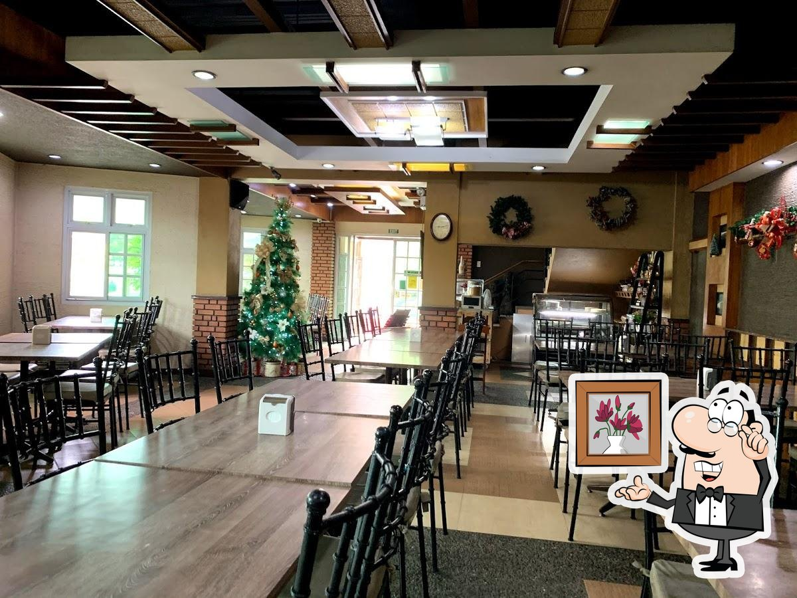
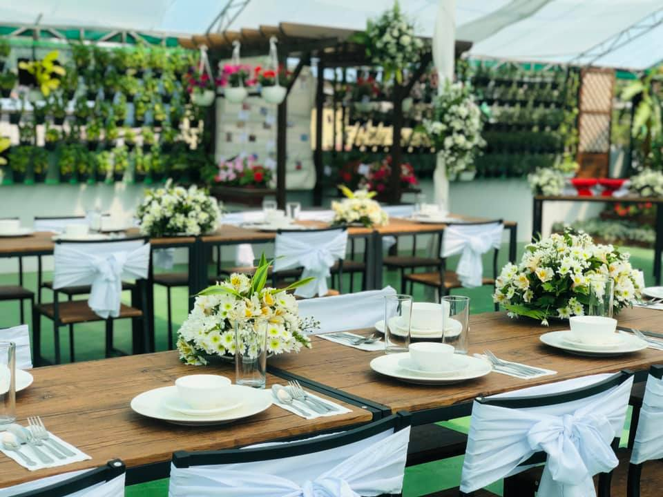

Dive into a seafood paradise at Dampa Express, where the ocean's bounty takes center stage. Immerse yourself in the vibrant maritime atmosphere as you feast on freshly caught delights prepared with culinary expertise, ensuring each dish at this seaside gem is a flavorful journey worth savoring.
Want Something to Munch on?
Restaurants

Dampa Express
Calajo Restaurant
Inglay Restaurant & Bakeshop

Mommy La Bakery & Restaurant
Dampa Express
Calajo Restaurant
At Love Matter Bistro, passion is the secret ingredient in every dish. This intimate eatery invites diners to savor delectable cuisine crafted with love, creating a dining experience that transcends the ordinary and leaves a lasting imprint on the heart.
Inglay Restaurant & Bakeshop
Ayatori Japanese Cuisine beckons with the artistry of Japanese culinary mastery. Immerse yourself in an elegant dining experience where precision meets flavor, as skilled chefs weave an intricate tapestry of sushi and sashimi, inviting patrons to savor the essence of authentic Japanese cuisine.

Mommy La Bakery & Restaurant
Kalei's Grill, a culinary haven where flames dance on the grill and flavors ignite the palate. This inviting eatery offers a fusion of bold and savory dishes, inviting patrons to indulge in a symphony of grilled delights in a warm and vibrant ambiance.